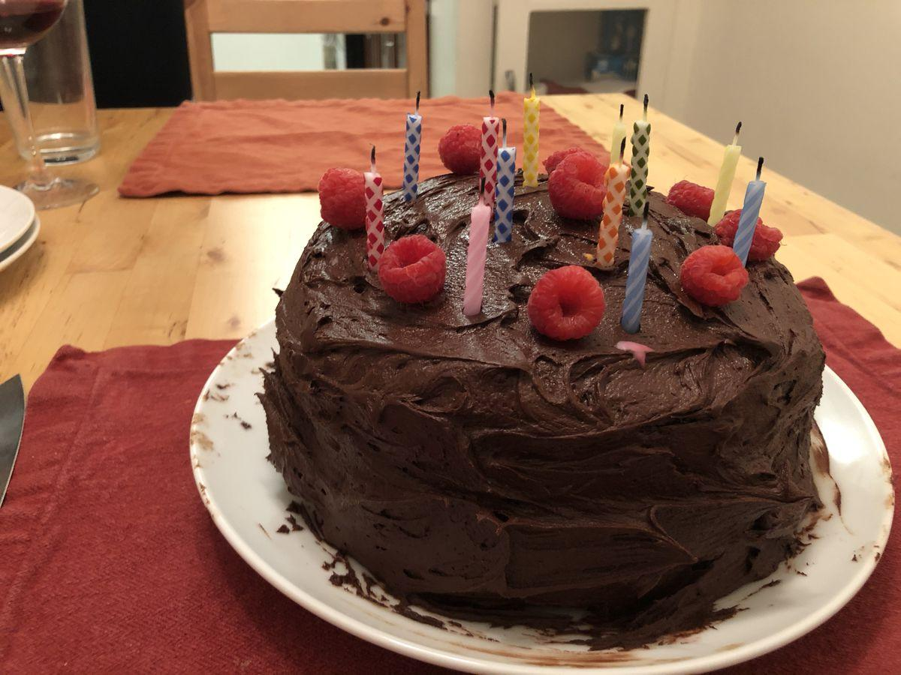

Based on https://www.kingarthurflour.com/recipes/super-simple-chocolate-frosting-recipe
Personal rating: 4 / 5

1.75 cups unsweetened cocoa powder, sifted
1.5 cups powdered sugar
2 cups powdered sugar, sifted
1 cup heavy cream
4 sticks of butter, soft and at room temp
1/8 tsp salt
2 tsp vanilla extract
(Optional) Betty Crocker Double Fudge Boxed Cake Mix
(Optional) Raspberry Jelly
(Optional) Make a cake with 2-3 round layers
(Optional) For the fruit filling between the layers, warm up the jelly until liquid-like and spread over the cake. Poke a few vertical holes so the jelly gets inside
Then frost!
Evenly spread the icing with a spatula; rotate the cake to help evenly ice